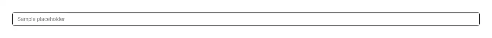

A text field that takes a length of time written the way people actually write one — 90m, 1h30m, 1h 30m, 2d 4h 15m, 1:30, 1.5h, 500ms, "90 minutes" — reads it into milliseconds, and echoes the reading back in words underneath it ("1 hour 30 minutes") so the interpretation is never left to be guessed at. Reach for it wherever a form asks how long rather than when: a request timeout or deadline, a cache TTL or expiry, session and token lifetimes, a retry or backoff interval, a polling or refresh interval, an SLA target, a job or cron timeout, an auto-logout window, a rate-limit window, a task estimate, a video or audio length, a snooze or reminder delay. Common asks it answers: "duration input", "duration picker", "time duration field", "timeout input", "TTL input", "interval input", "parse 1h30m", "hh:mm:ss duration input", "humanize duration" — the field otherwise assembled from a number box beside a unit <select>, or from parse-duration / pretty-ms / ms / humanize-duration. Official shadcn/ui has no duration component of any kind: input is a bare text box you would still have to parse, input-otp is for codes, and calendar answers which day, not how long. It settles the two things hand-rolled duration parsers get wrong. First, m versus ms: the whole run of letters is read before anything is looked up, so 500ms can never come out as 500 minutes. Second, what 1:30 means: two colon fields are read as mm:ss and three as hh:mm:ss, the way stopwatches and media players write them, and blur rewrites the entry into its canonical short form so 1:30 visibly becomes 1m 30s — a clock time is the other component's job, so 9:30 here is nine and a half minutes of elapsed time and time-input is where you type half past nine. Months and years are refused by name instead of being given an invented length, which also settles the usual M/m argument — parsing is case-insensitive and M is minutes. Beyond parsing: minMs/maxMs mark the field aria-invalid with a polite live message naming the bound in words, a value that is unusable or out of range is withheld from onValueChange so nothing handed to the caller needs validating twice, text that does not parse stays on screen instead of being deleted out from under the reader, and giving the field a name posts the milliseconds through a hidden input so the server is never handed prose. parseDuration and formatDuration are exported as plain functions for the rest of the app to share. One file, themed with shadcn tokens, no dependencies beyond React.

Rendered on the shadcn default neutral palette with harness-generated props.
pnpm dlx shadcn@4.21.0 add @pulld/duration-input
| licence | POINTER |
|---|---|
| primitive base | none |
| type | registry:ui |
| files | src/components/ui/duration-input.tsx |
| npm deps pulled | none beyond the pre-installed peer set |
| registry deps | — |
| semantic / palette / hex | 7 / 0 / 0 |
| writes shared ui/ | yes — can overwrite the project’s own primitives |